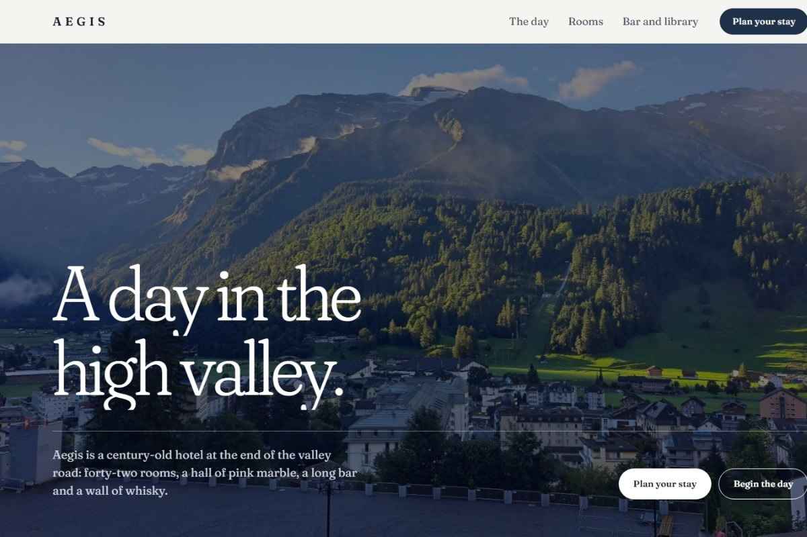
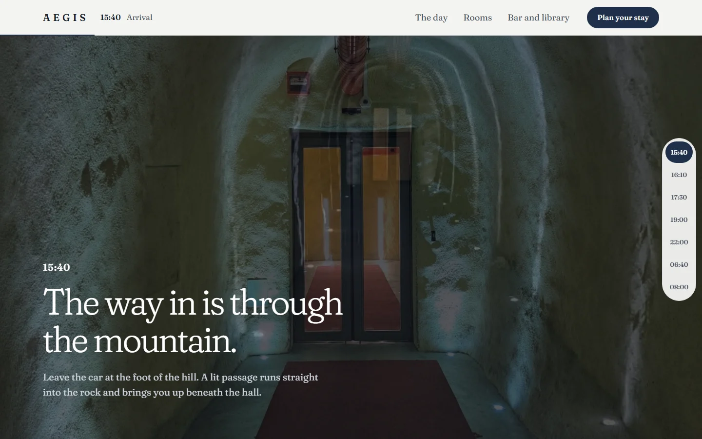
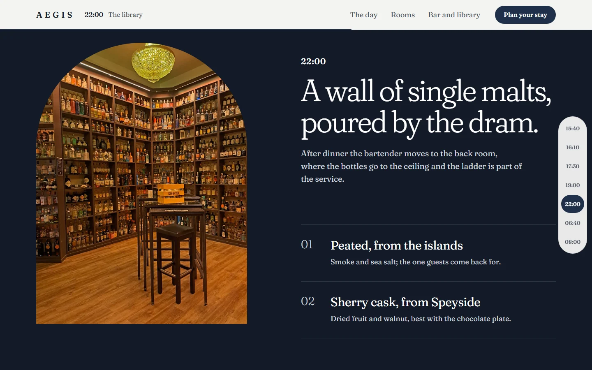

HOSPITALITY · SCROLL-DRIVEN STORYTELLING
Aegis
A mountain hotel site told as one day spent there, so scrolling becomes the stay itself rather than a tour of facilities.

Hotel sites list facilities; guests choose a feeling
Aegis is a self-initiated concept for a small, century-old hotel at the end of an alpine valley. The brief was to make browsing feel like discovering the place. A first version as a multi-venue group site worked but its stock imagery came from many unrelated shoots. I rebuilt it around one coherent photo set (CC BY 4.0, credited per file) and one narrative: arrive in the afternoon, spend the evening, wake in the valley. I owned the narrative structure, visual direction, motion, booking flow and front-end prototype.
Time of day is the navigation
The tunnel zooms in as you scroll and resolves into the door at its end: arrival as a moment, not a header image.
The arcaded hall pans sideways under vertical scroll, the way you would look along it in person.
A clock in the header and a time rail show the current scene; any time can be jumped to directly.
"Choose this room" preselects the room; the total shows tourist tax before the guest confirms.
Scroll is a camera, not a slideshow

15:40 Arrival, late in the scroll · Open full-size ↗Progress drives the scene
Each stage reads its own scroll progress; zoom, cross-fade and mist are pure CSS driven by one variable.
Wayfinding without menus
Header clock, time rail and a two-pixel progress line answer "where am I in the day" at a glance.
Motion is optional
With reduced motion every stage becomes an ordinary section: the mist is already lifted and the hall scrolls natively.

22:00 The library · Open full-size ↗Colour keeps time
Sections move from afternoon paper to dusk plum to night blue, so the palette itself tells the hour.
Hold the image, move the words
The library photo stays pinned while the drams scroll past, like standing at the shelves.
Rights handled in the interface
Every photo is credited to its author with licence and changes noted; images showing third-party logos were removed.
A complete, testable journey from mood to booking
The prototype covers seven scenes, a room selector and a booking request with sold-out alternatives, capacity checks, a confirmation step with Cancel, offline failure and retry. Automated rendered checks report no errors at four widths in light and dark, and 33 scripted browser checks pass, including the reduced-motion version.
Aegis is fictional. Room types, prices, opening hours and policies are sample data, and booking is simulated. The photographs show a real hotel and valley and are used for atmosphere only under CC BY 4.0. No guest research, conversion or business outcome is claimed.
Coherent imagery mattered more than more imagery
The first version had more sections and more photos, yet felt generic because no two images came from the same place. Committing to one shoot, and to a narrative that fits it, gave every layout decision a reason. It also exposed a rights question early: a real building under a fictional name needs care with signage, logos and claims.
Evidence details & validation plan
What I owned, chose, traded off — and what is still unknown
Detailed project context, decisions and evidence limits.
UI/UX Designer
Independent project; no separate PM, engineering or stakeholder team.
Imagery had to be free to use and come from one place; the only coherent set found shows a real hotel.
Concept redesign under the real hotel's name, or a fictional brand using only unbranded photos. The second was chosen with the project owner.
Structure the site as one day in seven timed scenes, with scroll-driven stages and a time rail.
The source set has no guest-room interiors, so the room scene shows the view from a balcony instead of a bedroom.
Implementation reality: static HTML/CSS/JS prototype; scroll stages driven by a single CSS variable per section; Playwright flow tests.
Built on the tokens and components of my uiux-ai-workspace design system with a project brand layer.
The first, multi-venue version used unrelated stock shoots and felt generic; it was replaced. Two chosen photos later turned out to show a drinks logo and a place name and were removed.
PLANNED / NOT MEASURED. Baseline: Needs first usability benchmark.
Test whether guests can find room prices and start a booking without the time rail before adding more scenes.
Success criteria before success claims
≥ 4/5 participants find a room price and reach the booking confirmation without getting lost in the scroll scenes. This is a decision threshold for future validation, not a measured outcome.